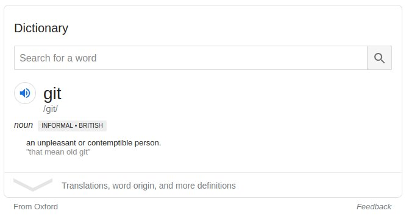
É onde o git guarda todas as informações sobre versões de um projeto
$ mkdir projeto
$ cd projeto
$ git init
Initialized empty Git repository in /home/lincoln/projeto/.git/
| 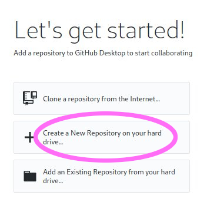 | 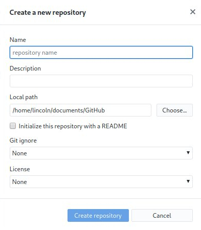 |
$ git clone git@github.com:python/cpython.git
| 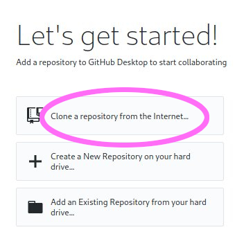 | 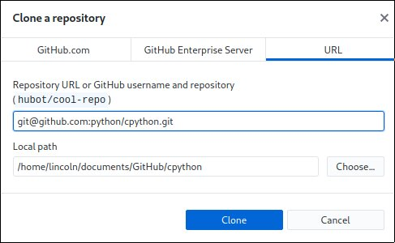 |
É a operação que armazena as modificações do projeto numa nova versão
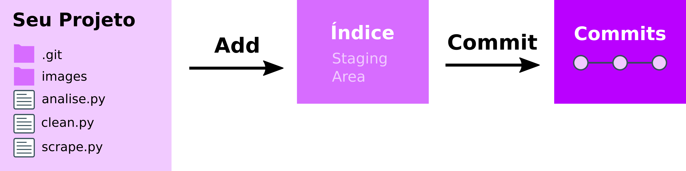
$ git diff
diff --git a/Programs/python.c b/Programs/python.c
index 84148f7767..96ce1534cb 100644
--- a/Programs/python.c
+++ b/Programs/python.c
@@ -12,6 +12,7 @@ wmain(int argc, wchar_t **argv)
int
main(int argc, char **argv)
{
+ printf("PYTHON IS FUN\n");
return Py_BytesMain(argc, argv);
}
#endif
$ git status
On branch master
Your branch is up to date with 'origin/master'.
Changes not staged for commit:
(use "git add <file>..." to update what will be committed)
(use "git checkout -- <file>..." to discard changes in working directory)
modified: Programs/python.c
no changes added to commit (use "git add" and/or "git commit -a")
$ git add Programs/python.c
$ git status
On branch master
Your branch is up to date with 'origin/master'.
Changes to be committed:
(use "git reset HEAD <file>..." to unstage)
modified: Programs/python.c
$ git commit -m "Imprime uma frase encorajadora"
[master 6604f4a491] Imprime uma frase encorajadora
1 file changed, 1 insertion(+)
$ git status
On branch master
Your branch is ahead of 'origin/master' by 1 commit.
(use "git push" to publish your local commits)
nothing to commit, working tree clean
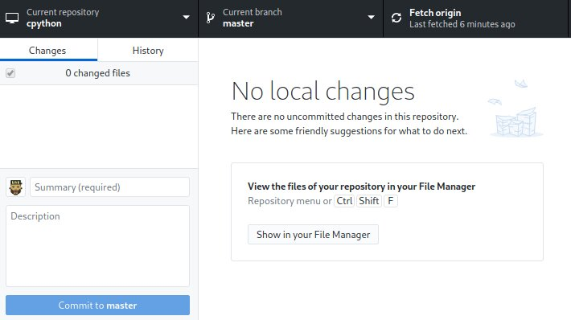
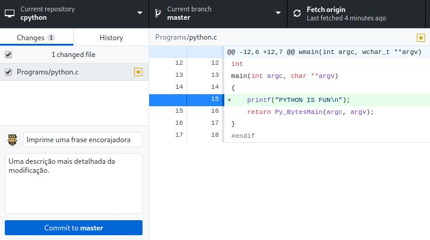
$ git log
commit c5c4b75a9ea59ddb64c8f1e3a8339db24406eb01 (HEAD -> master)
Author: Lincoln de Sousa <lincoln@clarete.li>
Date: Sat May 16 19:13:51 2020 -0400
Imprime uma frase encorajadora
commit 837f9e42e3a1ad03b340661afe85e67d2719334f (origin/master, origin/HEAD)
Author: Christian Heimes <christian@python.org>
Date: Sun May 17 01:05:40 2020 +0200
bpo-40645: Deprecated internal details of hmac.HMAC (GH-20132)
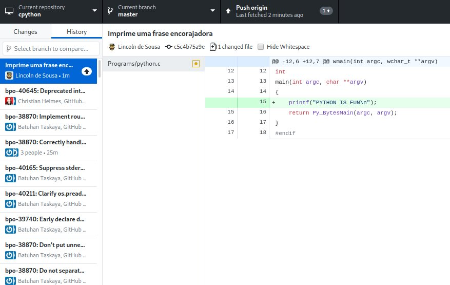
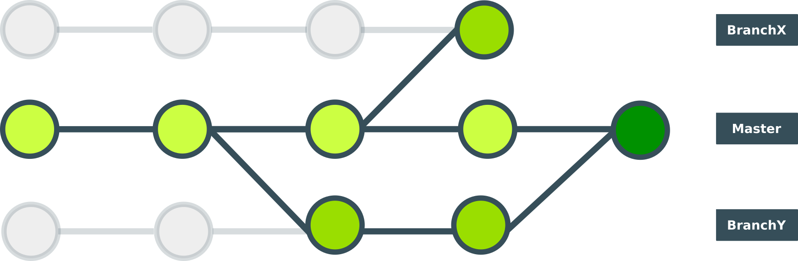
É um mecanismo que permite criar uma linha diferente de modificações de um certo commit em diante
$ git checkout -b outra-branch
$ git branch
* master
outra-branch
$ git checkout outra-branch
| 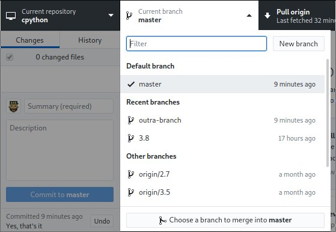 | 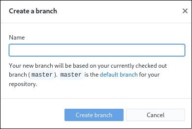 |
$ git diff master..HEAD
diff --git a/Programs/python.c b/Programs/python.c
index 96ce1534cb..bab46be816 100644
--- a/Programs/python.c
+++ b/Programs/python.c
@@ -12,7 +12,7 @@ wmain(int argc, wchar_t **argv)
int
main(int argc, char **argv)
{
- printf("PYTHON IS FUN\n");
+ printf("PYTHON IS REALLY FUN\n");
return Py_BytesMain(argc, argv);
}
#endif
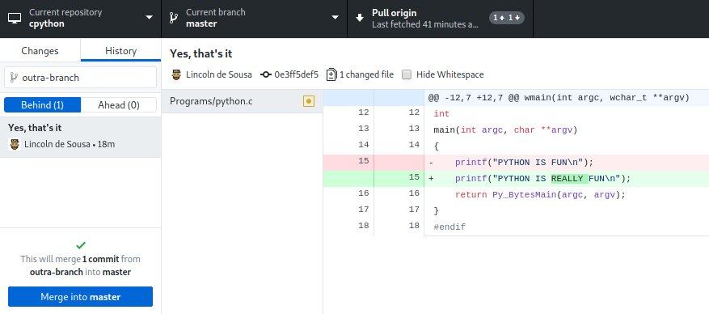
$ git checkout master
$ git merge outra-branch
Updating c5c4b75a9e..0e3ff5def5
Fast-forward
Programs/python.c | 2 +-
1 file changed, 1 insertion(+), 1 deletion(-)
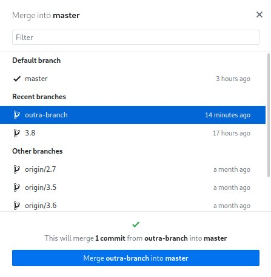
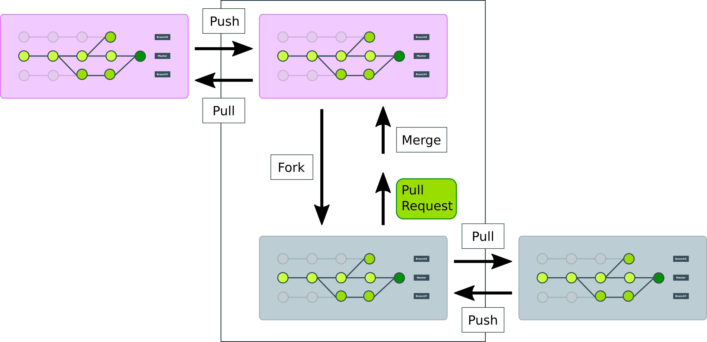
É a operação que permite que pessoas proponham modificações a um projeto existente
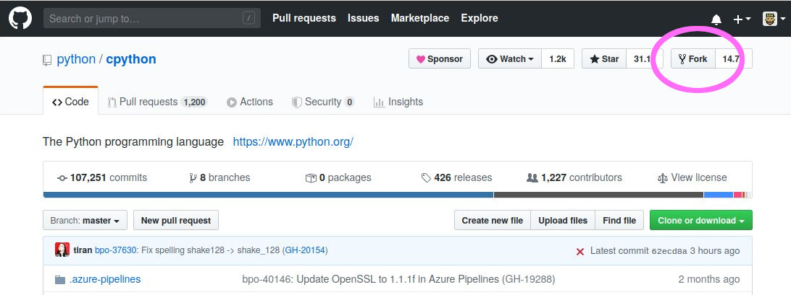
$ git clone github.com/clarete/cpython
Faça o commit de suas modificações localmente
$ git push
Enumerating objects: 29408, done.
Counting objects: 100% (29408/29408), done.
Delta compression using up to 4 threads
Compressing objects: 100% (7977/7977), done.
Writing objects: 100% (27679/27679), 10.84 MiB | 3.18 MiB/s, done.
Total 27679 (delta 22479), reused 24752 (delta 19595)
remote: Resolving deltas: 100% (22479/22479), completed with 1646 local ...
remote:
remote: Create a pull request for 'outra-branch' on GitHub by visiting:
remote: https://github.com/clarete/cpython/pull/new/outra-branch
remote:
To github.com:clarete/cpython
* [new branch] outra-branch -> outra-branch
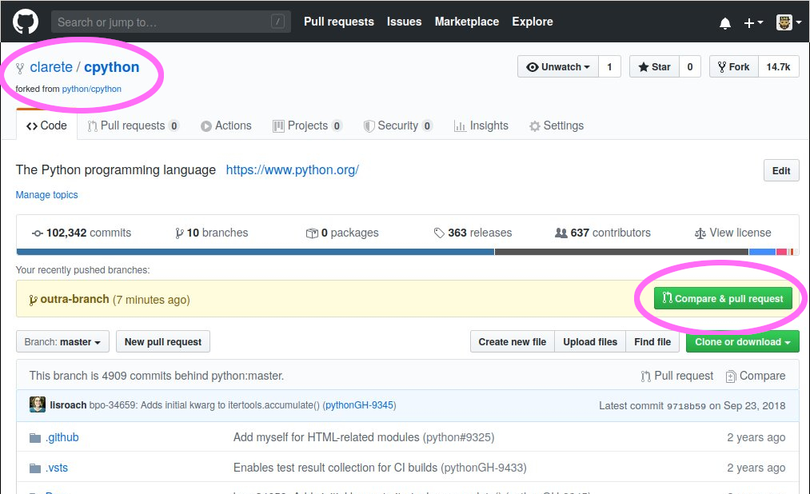